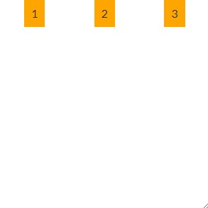
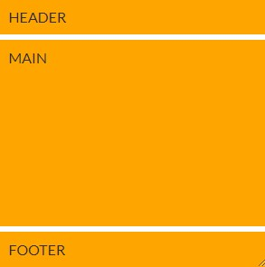
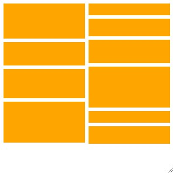
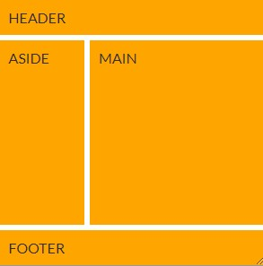
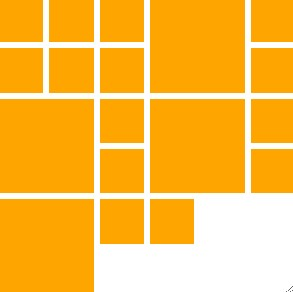
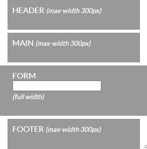
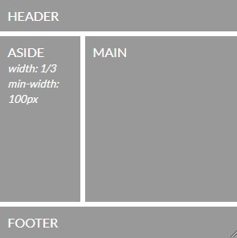
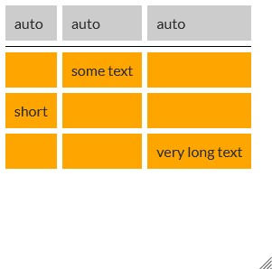

Simple Alignment
Your task: Center the text horizontally and vertically inside the resizable panel.
Check your result: The text should stay centered as both panel dimensions change.
Edit Lesson2/styles/training_styles.css · .exercise-alignment
Hint 1 — approach
Let the layout system align the child instead of adding fixed offsets.
Hint 2 — properties to explore
Try Grid with justify-items and align-items, or the equivalent Flexbox alignment.
Open image to inspect the full-size target (new tab).
Horizontal 1D
Your task: Arrange the three items in one horizontal row with evenly distributed space.
Check your result: Items should remain in order and align at the top as the panel changes size.
Edit Lesson2/styles/training_styles.css · .exercise-horizontal-flow
Hint 1 — approach
Choose a one-dimensional flow and then distribute its free space.
Hint 2 — properties to explore
Try grid-auto-flow: column with justify-content, or use Flexbox.

Open image to inspect the full-size target (new tab).
Vertical 1D
Your task: Stack the header, main, and footer so the main region fills the remaining height.
Check your result: Header and footer should fit their content while the main region grows.
Edit Lesson2/styles/training_styles.css · .exercise-vertical-flow
Hint 1 — approach
Separate content-sized tracks from the flexible track.
Hint 2 — properties to explore
Try grid-template-rows: auto 1fr auto with a gap.

Open image to inspect the full-size target (new tab).
Masonry Horizontal
Your task: Wrap the varied-width blocks into horizontal rows with consistent gaps.
Check your result: Block widths should be preserved and additional rows should appear when space runs out.
Edit Lesson2/styles/training_styles.css · .exercise-masonry-horizontal
Hint 1 — approach
This layout can be built with wrapping rather than fixed coordinates.
Hint 2 — properties to explore
Try Flexbox with flex-wrap and gap; align the rows at the start.
Open image to inspect the full-size target (new tab).
Masonry Vertical
Your task: Distribute the varied-height blocks into two vertical columns.
Check your result: Preserve the block heights and use consistent spacing between columns and blocks.
Edit Lesson2/styles/training_styles.css · .exercise-masonry-vertical
Hint 1 — approach
CSS multi-column layout can flow content down before moving across.
Hint 2 — properties to explore
Explore column-count and column-gap, and keep individual blocks from splitting.

Open image to inspect the full-size target (new tab).
2D - Template Areas
Your task: Build a header, sidebar, main, and footer layout using named grid areas.
Check your result: Header and footer should span both columns; main should be wider than the sidebar.
Edit Lesson2/styles/training_styles.css · .exercise-template-areas
Hint 1 — approach
Sketch the layout as a small matrix of area names.
Hint 2 — properties to explore
Define grid-template-areas and assign a grid-area to each region.

Open image to inspect the full-size target (new tab).
2D - Implicit Grid
Your task: Build a wrapping grid of square tiles, making every fourth tile span two rows and columns.
Check your result: Tiles should stay square and smaller tiles should fill available holes as the panel resizes.
Edit Lesson2/styles/training_styles.css · .exercise-implicit-grid
Hint 1 — approach
Let the browser create rows and choose how many columns fit.
Hint 2 — properties to explore
Combine repeat(auto-fill, minmax(...)), aspect-ratio, spans, and grid-auto-flow: dense.

Open image to inspect the full-size target (new tab).
Responsive template
Your task: Center content within a maximum width of 300px while allowing the form section to span the panel.
Check your result: Content should shrink with the panel and the full-width section should reach both edges.
Edit Lesson2/styles/training_styles.css · .exercise-responsive-template
Hint 1 — approach
Use flexible gutters around a constrained center track.
Hint 2 — properties to explore
Try three columns with minmax() and assign the full-width section to grid-column: 1 / -1.

Open image to inspect the full-size target (new tab).
Fluid template
Your task: Build a fluid two-column layout with a sidebar about one third of the width and at least 100px wide.
Check your result: Header and footer should span the layout; the sidebar should respect its minimum width.
Edit Lesson2/styles/training_styles.css · .exercise-fluid-template
Hint 1 — approach
Fractional tracks can share space while minmax() supplies a lower bound.
Hint 2 — properties to explore
Combine named areas with minmax(100px, 0.5fr) and a 1fr main track.

Open image to inspect the full-size target (new tab).
Bonus Training - subgrid table
Your task: Align table-like cells across the header and every nested row using subgrid.
Check your result: Each column should size to its content and stay aligned across all rows.
Edit Lesson2/styles/training_styles.css · .exercise-subgrid-table
Hint 1 — approach
Nested grids can inherit the parent grid tracks.
Hint 2 — properties to explore
Define three parent columns and use grid-template-columns: subgrid on spanning header, main, and row elements.

Open image to inspect the full-size target (new tab).